Full control.⌘ included.
Modifiers live in a dock at the bottom of the session: tap one to hold it for the next key, twice to keep it held. Trackpad or touch, your call.
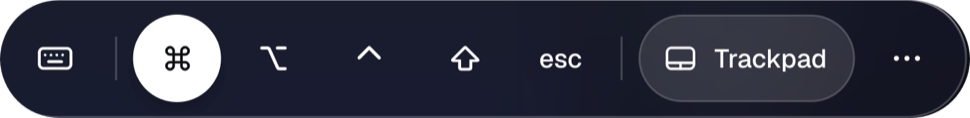
A VNC and Screen Sharing client for iPhone and iPad. Nothing to install on the Mac, no account, no cloud in between.
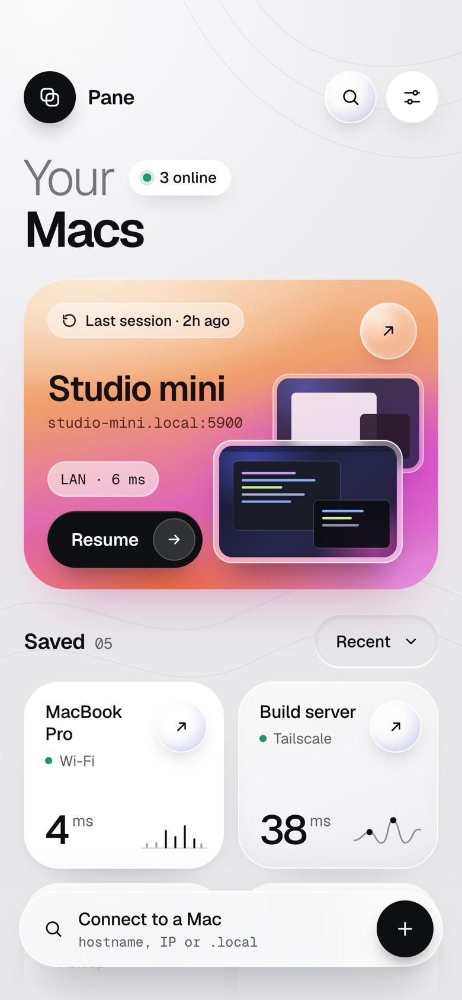
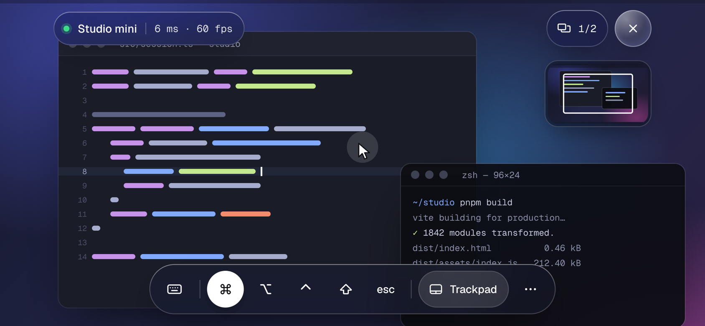
Finds your Macs, remembers the login, and gives you the whole keyboard. The rest is the Mac.
Modifiers live in a dock at the bottom of the session: tap one to hold it for the next key, twice to keep it held. Trackpad or touch, your call.

Saved in your iPhone’s Keychain, unlocked with Face ID. Pane talks straight to the Mac.
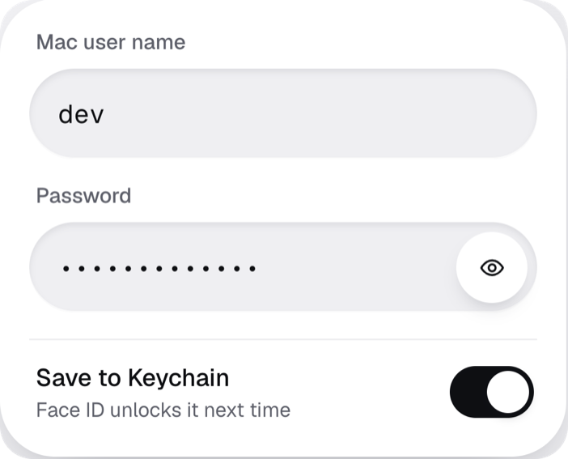
Macs with Screen Sharing on show up by themselves. Or type a name or address: port and account are assumed.
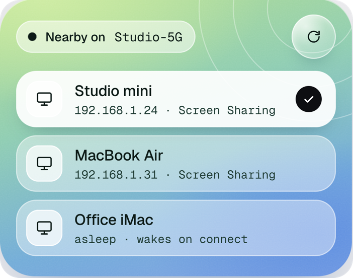
Resume where you left off, wake a sleeping Mac, see what’s online, at home or over Tailscale.
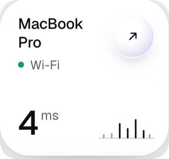
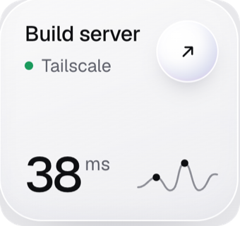
Latency, frame rate, displays, quality and clipboard in a panel beside the screen. Pinch to zoom, two fingers to pan.
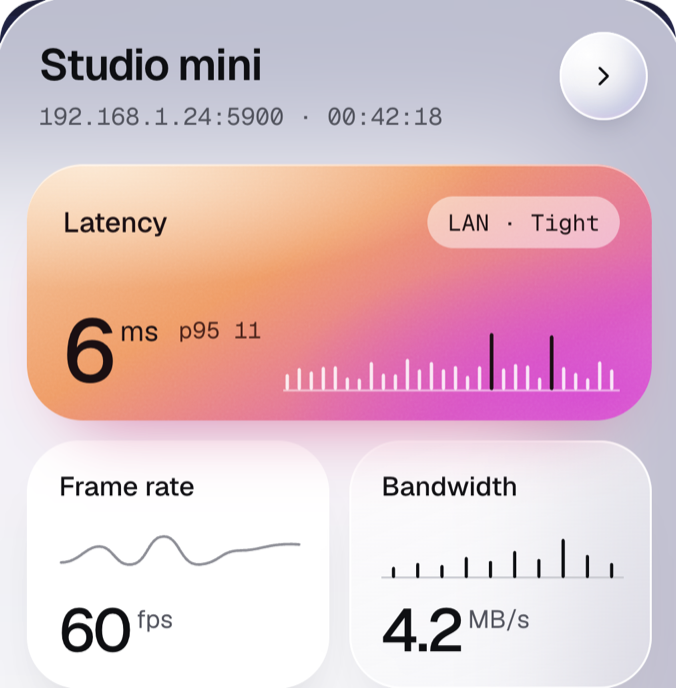
Switch between the Mac’s displays mid-session. Auto quality adapts to the network.
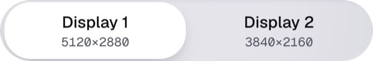
Quality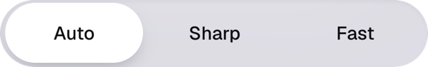
Text copied on the iPhone lands on the Mac, and the other way round. Lock the Mac when you leave.
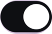
Pane Relay is a small app for your Mac. Scan its code with the iPhone camera and Pane reaches the Mac from any network, cellular or hotel Wi-Fi, with no Tailscale, VPN or router settings. At home Pane still connects directly; the relay steps in only when the home address is silent.
Free on the App Store. No account, nothing to install on the Mac, nothing in between.
Download on theApp Store iPhone · iPad · Screen Sharing and VNC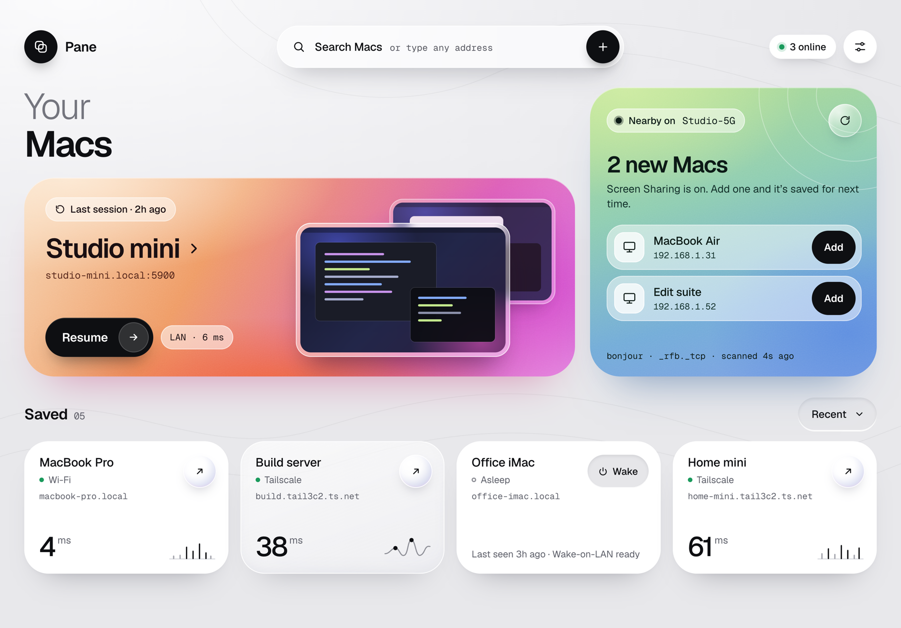